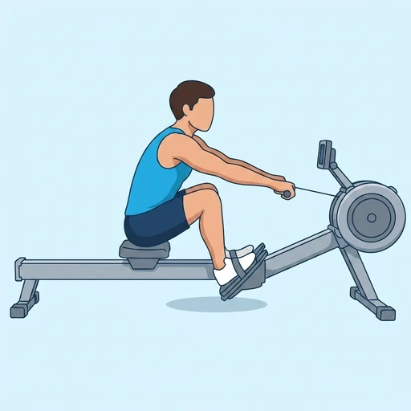
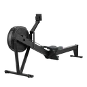

Rowing Machine
A full-body cardio machine movement in which each stroke drives with the legs, swings the torso back and pulls the handle to the ribs, training the legs, back and arms in one continuous cycle.
Full body · Rower · Beginner


Muscles worked by the Rowing Machine
Primary
Secondary
Also called: lats, lat, latissimus dorsi, latissimus, back wings, quad.
Equipment

RowerAlso called: rowing machine, concept 2, erg, rowing erg, indoor rower.
How to do the Rowing Machine
- Sit on the rower, strap your feet into the footplates and take the handle with an overhand grip.
- Slide forward into the catch: shins vertical, torso leaning slightly ahead of the hips, arms straight out toward the flywheel.
- Drive through your legs first, pushing the seat back until your knees are almost straight.
- Swing your torso back past vertical, then pull the handle in to your lower ribs with your elbows travelling past your sides.
- Reverse the order on the recovery — arms away, torso forward, then bend the knees — and slide back to the catch for the next stroke.
- Continue for the desired time, distance or number of strokes.
Form tips
- Keep the order: legs, then body, then arms on the drive, and arms, body, legs on the recovery. Breaking the arms early wastes the strongest part of the stroke.
- Row with a flat back and a braced core — rounding the lower back at the catch is what turns rowing into a back ache instead of conditioning.
- Let the handle travel in a straight, level line to the lower ribs, and make the recovery about twice as slow as the drive rather than rushing back to the catch.
At a glance
| Body part | Full body |
|---|---|
| Category | Cardio |
| Force type | Pull |
| Mechanic | Compound |
| Difficulty | Beginner |
| Equipment | Rower |
| Goals | Endurance, Power |
| Tags | Full body, Conditioning, No axial load |
| MET | 8.0 (metabolic equivalent, for calorie estimates) |
| Unilateral | No |
| Bodyweight | No |
| Dataset id | rowing-machine |
Rowing Machine in German & Spanish
| German | Rudergerät |
|---|---|
| Spanish | Máquina de Remo |
Descriptions, instructions and tips ship in all three languages in the JSON.
Related exercises
Exercise data (JSON)
The record below is exactly what exercises.json ships for this exercise — names, descriptions, instructions and tips in English, German and Spanish.
{
"id": "rowing-machine",
"name_en": "Rowing Machine",
"name_de": "Rudergerät",
"name_es": "Máquina de Remo",
"description_en": "A full-body cardio machine movement in which each stroke drives with the legs, swings the torso back and pulls the handle to the ribs, training the legs, back and arms in one continuous cycle.",
"description_de": "Eine Ganzkörper-Ausdauerübung am Rudergerät, bei der jeder Zug über die Beine antreibt, den Oberkörper nach hinten schwingt und den Griff an die Rippen zieht — Beine, Rücken und Arme arbeiten in einem durchgehenden Zyklus.",
"description_es": "Un ejercicio cardiovascular de cuerpo completo en la máquina de remo: cada palada empuja con las piernas, lleva el torso hacia atrás y tira de la manija hasta las costillas, trabajando piernas, espalda y brazos en un ciclo continuo.",
"category": "cardio",
"force_type": "pull",
"mechanic": "compound",
"difficulty": "beginner",
"equipment": "rower",
"body_part": "full_body",
"primary_muscles": [
"latissimus_dorsi",
"quadriceps"
],
"secondary_muscles": [
"biceps_brachii",
"erector_spinae",
"gluteus_maximus",
"hamstrings",
"rhomboids",
"trapezius"
],
"goals": [
"endurance",
"power"
],
"tags": [
"full_body",
"conditioning",
"no_axial_load"
],
"is_unilateral": false,
"is_bodyweight": false,
"instructions_en": [
"Sit on the rower, strap your feet into the footplates and take the handle with an overhand grip.",
"Slide forward into the catch: shins vertical, torso leaning slightly ahead of the hips, arms straight out toward the flywheel.",
"Drive through your legs first, pushing the seat back until your knees are almost straight.",
"Swing your torso back past vertical, then pull the handle in to your lower ribs with your elbows travelling past your sides.",
"Reverse the order on the recovery — arms away, torso forward, then bend the knees — and slide back to the catch for the next stroke.",
"Continue for the desired time, distance or number of strokes."
],
"instructions_de": [
"Setz dich auf das Rudergerät, schnall die Füße auf den Fußplatten fest und greif den Griff im Obergriff.",
"Roll nach vorn in die Auslage: Schienbeine senkrecht, Oberkörper leicht vor der Hüfte, Arme gestreckt Richtung Schwungrad.",
"Drück zuerst über die Beine ab und schieb den Sitz nach hinten, bis die Knie fast gestreckt sind.",
"Schwing den Oberkörper über die Senkrechte hinaus nach hinten und zieh dann den Griff an die unteren Rippen, wobei die Ellbogen an den Seiten vorbeigehen.",
"Kehr die Reihenfolge in der Rückholphase um — erst die Arme nach vorn, dann den Oberkörper, dann die Knie beugen — und roll zurück in die Auslage für den nächsten Zug.",
"Mach weiter für die gewünschte Zeit, Distanz oder Anzahl an Zügen."
],
"instructions_es": [
"Siéntate en la máquina de remo, sujeta los pies con las correas de las plataformas y agarra la manija en pronación.",
"Deslízate hacia delante hasta la posición de ataque: tibias verticales, torso ligeramente por delante de la cadera y brazos estirados hacia el volante.",
"Empuja primero con las piernas y desplaza el asiento hacia atrás hasta dejar las rodillas casi estiradas.",
"Lleva el torso hacia atrás pasando de la vertical y tira entonces de la manija hasta las costillas bajas, con los codos pasando junto a los costados.",
"Invierte el orden en la recuperación — primero los brazos hacia delante, después el torso y por último flexionar las rodillas — y vuelve a deslizarte hasta la posición de ataque para la siguiente palada.",
"Continúa durante el tiempo, la distancia o el número de paladas que quieras."
],
"tips_en": [
"Keep the order: legs, then body, then arms on the drive, and arms, body, legs on the recovery. Breaking the arms early wastes the strongest part of the stroke.",
"Row with a flat back and a braced core — rounding the lower back at the catch is what turns rowing into a back ache instead of conditioning.",
"Let the handle travel in a straight, level line to the lower ribs, and make the recovery about twice as slow as the drive rather than rushing back to the catch."
],
"tips_de": [
"Halte die Reihenfolge ein: Beine, Rumpf, Arme im Zug und Arme, Rumpf, Beine in der Rückholphase. Wer die Arme zu früh beugt, verschenkt den stärksten Teil des Zuges.",
"Rudere mit flachem Rücken und festem Rumpf — ein runder unterer Rücken in der Auslage ist der Grund, warum Rudern im Kreuz zwickt statt fit zu machen.",
"Führ den Griff auf einer geraden, waagerechten Linie an die unteren Rippen und lass die Rückholphase etwa doppelt so lange dauern wie den Zug."
],
"tips_es": [
"Respeta el orden: piernas, torso y brazos en el tirón, y brazos, torso y piernas en la recuperación. Flexionar los brazos antes de tiempo desaprovecha la parte más fuerte de la palada.",
"Rema con la espalda plana y el core activado: redondear la zona lumbar en la posición de ataque es lo que convierte el remo en dolor de espalda en lugar de trabajo cardiovascular.",
"Lleva la manija en línea recta y horizontal hasta las costillas bajas, y haz la recuperación unas dos veces más lenta que el tirón en lugar de volver de golpe."
],
"met": 8.0,
"images": {
"flat": {
"start": "images/flat/rowing-machine-start.webp",
"peak": "images/flat/rowing-machine-peak.webp"
}
}
}Fetch just this exercise
const { exercises } = await fetch(
"https://exercise-dataset.com/exercises.json"
).then(r => r.json());
const ex = exercises.find(e => e.id === "rowing-machine");Free for personal and commercial in-app use with attribution (“Exercise data by RepDB”) — see the license and ready-made attribution snippets. Redistributing the data as a dataset or API is not permitted.